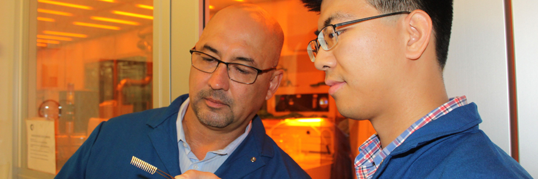

Posted on December 18, 2017
Dr. Alexander A. Balandin, Distinguished Professor and University of California Presidential Chair Professor at the Department of Electrical and Computer Engineering received two new grants in the nanotechnology field. The one-year $150 K proof-of-concept project funded by the Defense Advance Research Project Agency (DARPA) is entitled “Phonon Engineered Materials for Fine-Tuning the Career Recombination.” This project deals with an application of the nanoscale phonon engineering concept, pioneered by Professor Balandin, to the development of the next generation of devices that enable advanced electro-optic detection, sensing and imaging. The main idea of the approach is tuning the acoustic phonon energy dispersion in nanostructured materials for achieving optimum electron – phonon scattering rates, and corresponding improvement in the device performance. Phonons are the quanta of the crystal lattice vibrations that scatter electrons and conduct heat in semiconductors. The second, three-year $264 K project, funded by the Semiconductor Research Corporation (SRC), is entitled “Fabrication and Testing of Quasi-1D van der Waals Metal Interconnects”. The goal of this project is development of novel interconnects providing an ultimate atomic thickness limit of the cross-section. The technology will utilize quasi-one-dimensional (1D) van der Waals metals, which can be grown into individual single crystalline atomic threads with extraordinary current-carrying capability. Professor Balandin’s research group has already demonstrated the first quasi-1D crystalline nanowires with the current-densities exceeding copper by more than an order-of-magnitude. Professor Balandin will collaborate with Professor Ludwig Bartels, Department of Chemistry on implementation of this project. Read More...
Posted on August 25, 2017
Ece Aytan, Graduate Student Researcher and PhD student in Professor A.A. Balandin’ Phonon Optimized Engineered Materials (POEM) Center received the Best Research Poster – Research Cooperation Award at the 3rd Annual SHINES EFRC Symposium conducted this month at the Hilton La Jolla Torrey Pines hotel in La Jolla, California. The Spins and Heat in Nanoscale Electronic Systems (SHINES) is an Energy Frontier Research Center (EFRC) funded with $12 million grant from the US Department of Energy. Ece Aytan was the first author of the poster entitled Spin – Phonon Coupling in NiO. Nickel Oxide (NiO) is a promising antiferromagnetic material for spintronic device applications. The five winning posters presented by graduate students have been selected by the members of the external Scientific Advisory Board and all participating co-PIs of the center. The research presented in Ece Aytan’s poster resulted from cooperation among research groups of Professors Alexander Balandin (ECE), Roger Lake (ECE) and Jing Shi (Physics and Astronomy). Other contributing co-authors included Graduate Student Researcher Bishwajit Debnath and Postdoctoral Researcher Fariborz Kargar, both from ECE Department. The SHINES Center combines co-PIs from seven institutions – UC Riverside (lead organization), UCLA, UC Irvine, Johns Hopkins University, Colorado State University, Arizona State University, and University of Texas at Austin. Prof. Jing Shi, Department of Physics and Astronomy, serves as the Center Director while Prof. Alexander Balandin, Department of Electrical and Computer Engineering, serves as an Associate Director. Read More...
by UCR Today
Posted on November 10, 2016
RIVERSIDE, Calif. (www.ucr.edu) — Controlling the flow of heat through semiconductor materials is an important challenge in developing smaller and faster computer chips, high-performance solar panels, and better lasers and biomedical devices. For the first time, an international team of scientists led by a researcher at the University of California, Riverside has modified the energy spectrum of acoustic phonons— elemental excitations, also referred to as quasi-particles, that spread heat through crystalline materials like a wave—by confining them to nanometer-scale semiconductor structures. The results have important implications in the thermal management of electronic devices. Led by Alexander Balandin, Distinguished Professor of Electrical and Computing Engineering and UC Presidential Chair Professor in UCR’s Bourns College of Engineering, the research is described in a paper published Thursday, Nov. 10, in the journal Nature Communications. The paper is titled “Direct observation of confined acoustic phonon polarization branches in free-standing nanowires.” Read More...
RIVERSIDE, Calif. (www.ucr.edu) — Controlling the flow of heat through semiconductor materials is an important challenge in developing smaller and faster computer chips, high-performance solar panels, and better lasers and biomedical devices. For the first time, an international team of scientists led by a researcher at the University of California, Riverside has modified the energy spectrum of acoustic phonons— elemental excitations, also referred to as quasi-particles, that spread heat through crystalline materials like a wave—by confining them to nanometer-scale semiconductor structures. The results have important implications in the thermal management of electronic devices. Led by Alexander Balandin, Distinguished Professor of Electrical and Computing Engineering and UC Presidential Chair Professor in UCR’s Bourns College of Engineering, the research is described in a paper published Thursday, Nov. 10, in the journal Nature Communications. The paper is titled “Direct observation of confined acoustic phonon polarization branches in free-standing nanowires.”
Read MorePosted on August 27, 2016
ECE professors, postdoctoral researchers and graduate students participated in the Annual SHINES center Symposium. The SHINES Symposium was held on August 25 - 27, 2016 in UCR Barbara and Art Culver Center of the Arts in downtown Riverside. The symposium featured talks of the participating PIs and a poster session with the graduate student presentations. The symposium was attended by the SHINES Scientific Advisory Committee members from industry and government laboratories. The Spins and Heat in Nanoscale Electronic Systems (SHINES) is an Energy Frontier Research Center (EFRC) funded in 2014 with $12 million grant from the US Department of Energy. The SHINES Center aims to develop a fundamental understanding of electron spin and heat transport as well as the interplay between them in nanoscale electronic materials and devices. Fariborz Kargar, ECE PhD candidate in the Balandin Group, won one of the SHINES Best Poster awards for his research presentation on Brillouin – Mandelstam spectroscopy of acoustic phonons in semiconductor nanostructures. The SHINES Center consists of 14 PIs from 7 institutions – UC Riverside, UCLA, UC Irvine, Johns Hopkins University, Colorado State University, Arizona State University, and University of Texas at Austin – plus two UCR PIs with seed projects. Prof. Jing Shi, Department of Physics and Astronomy, serves as the Center Director while Prof. Alexander Balandin, Department of Electrical and Computer Engineering, serves as an Associate Director. Other PIs from the Department of Electrical and Computer Engineering include Prof. Roger Lake, Adjunct Prof. Alexander Khitun and Prof. Jianlin Liu. Read More...
ECE professors, postdoctoral researchers and graduate students participated in the Annual SHINES center Symposium. The SHINES Symposium was held on August 25 - 27, 2016 in UCR Barbara and Art Culver Center of the Arts in downtown Riverside. The symposium featured talks of the participating PIs and a poster session with the graduate student presentations. The symposium was attended by the SHINES Scientific Advisory Committee members from industry and government laboratories. The Spins and Heat in Nanoscale Electronic Systems (SHINES) is an Energy Frontier Research Center (EFRC) funded in 2014 with $12 million grant from the US Department of Energy. The SHINES Center aims to develop a fundamental understanding of electron spin and heat transport as well as the interplay between them in nanoscale electronic materials and devices. Fariborz Kargar, ECE PhD candidate in the Balandin Group, won one of the SHINES Best Poster awards for his research presentation on Brillouin – Mandelstam spectroscopy of acoustic phonons in semiconductor nanostructures. The SHINES Center consists of 14 PIs from 7 institutions – UC Riverside, UCLA, UC Irvine, Johns Hopkins University, Colorado State University, Arizona State University, and University of Texas at Austin – plus two UCR PIs with seed projects. Prof. Jing Shi, Department of Physics and Astronomy, serves as the Center Director while Prof. Alexander Balandin, Department of Electrical and Computer Engineering, serves as an Associate Director. Other PIs from the Department of Electrical and Computer Engineering include Prof. Roger Lake, Adjunct Prof. Alexander Khitun and Prof. Jianlin Liu.
Read More >>>>>>> 3080609f9941c8f1a8abbc61fb69c5475ac42db6Posted on July 5, 2016
Graphene has emerged as one of the most promising two-dimensional materials but the future of electronics may include two other nanomaterials, according to a new study in ECE Professor Balandin and ECE Professor Lake Groups at the Department of Electrical and Computer Engineering of the University of California – Riverside. In recent research published in the journal Nature Nanotechnology, the researchers described the integration of three very different two-dimensional (2D) materials to yield a simple, compact, and fast voltage controlled oscillator (VCO) device. A VCO is an electronic oscillator whose oscillation frequency is controlled by a voltage input. Titled “An Integrated Tantalum Sulfide—Boron Nitride—Graphene Oscillator: A Charge-Density-Wave Device Operating at Room Temperature,” the paper describes the development of the first useful device that exploits the potential of charge-density waves to modulate an electrical current through a 2D material. The new technology could become an ultralow power alternative to conventional silicon-based devices, which are used in thousands of applications from computers to clocks to radios. The thin, flexible nature of the device would make it ideal for use in wearable technologies. The first author of the paper Dr. Guanxiong Liu – Postdoctoral Researcher in the Balandin Group – fabricated the devices and conducted their testing. Bishwajit Debnath – PhD student in the Lake Group – performed modeling and simulation of the device operation. The research involved cooperation with Professor Tina Salguero from the University of Georgia who provided high-quality crystalline material for device fabrication.
Photo: UC Riverside’s Alexander Balandin (left) and Guanxiong Liu fabricated the voltage-controlled oscillator device in a cleanroom at the university’s Center for Nanoscale Science and Engineering (CNSE). Read More...
======= Graphene has emerged as one of the most promising two-dimensional materials but the future of electronics may include two other nanomaterials, according to a new study in ECE Professor Balandin and ECE Professor Lake Groups at the Department of Electrical and Computer Engineering of the University of California – Riverside. In recent research published in the journal Nature Nanotechnology, the researchers described the integration of three very different two-dimensional (2D) materials to yield a simple, compact, and fast voltage controlled oscillator (VCO) device. A VCO is an electronic oscillator whose oscillation frequency is controlled by a voltage input. Titled “An Integrated Tantalum Sulfide—Boron Nitride—Graphene Oscillator: A Charge-Density-Wave Device Operating at Room Temperature,” the paper describes the development of the first useful device that exploits the potential of charge-density waves to modulate an electrical current through a 2D material. The new technology could become an ultralow power alternative to conventional silicon-based devices, which are used in thousands of applications from computers to clocks to radios. The thin, flexible nature of the device would make it ideal for use in wearable technologies. The first author of the paper Dr. Guanxiong Liu – Postdoctoral Researcher in the Balandin Group – fabricated the devices and conducted their testing. Bishwajit Debnath – PhD student in the Lake Group – performed modeling and simulation of the device operation. The research involved cooperation with Professor Tina Salguero from the University of Georgia who provided high-quality crystalline material for device fabrication.
Photo: UC Riverside’s Alexander Balandin (left) and Guanxiong Liu fabricated the voltage-controlled oscillator device in a cleanroom at the university’s Center for Nanoscale Science and Engineering (CNSE).
>>>>>>> 3080609f9941c8f1a8abbc61fb69c5475ac42db6The links below provide access to a complete story about the 2D device and full-text of the Nature Nanotechnology publication.
<<<<<<< HEADby UCR ECE
Posted on May 5, 2016
Dr. Guanxiong Liu – Postdoctoral Researcher in the Nano-Device Laboratory (NDL) and the Phonon Optimized Engineered Materials (POEM) Center led by Professor Alexander A. Balandin received the Best Poster Awards at the 2016 Materials Research Society (MRS) Spring meeting in Phoenix, Arizona. The MRS Symposium Chairs selected five winners out of more than 400 posters presented at the meeting. The posters span all symposium topics in materials science and nanotechnology research. The poster presented by Dr. Guanxiong Liu was entitled "In-Situ Raman Spectroscopy of the Charge-Density-Wave Phase Transitions in Tantalum Disulfide Thin Films". The presented research was conducted in collaboration with Professor Tina Salguero of the University of Georgia. The poster reported spectroscopic evidence of the room temperature charge-density-wave phase transition triggered by voltage in thin films of this material. Read More...
Photo: Dr. Guanxiong Liu with the winning poster.
Dr. Guanxiong Liu – Postdoctoral Researcher in the Nano-Device Laboratory (NDL) and the Phonon Optimized Engineered Materials (POEM) Center led by Professor Alexander A. Balandin received the Best Poster Awards at the 2016 Materials Research Society (MRS) Spring meeting in Phoenix, Arizona. The MRS Symposium Chairs selected five winners out of more than 400 posters presented at the meeting. The posters span all symposium topics in materials science and nanotechnology research. The poster presented by Dr. Guanxiong Liu was entitled "In-Situ Raman Spectroscopy of the Charge-Density-Wave Phase Transitions in Tantalum Disulfide Thin Films". The presented research was conducted in collaboration with Professor Tina Salguero of the University of Georgia. The poster reported spectroscopic evidence of the room temperature charge-density-wave phase transition triggered by voltage in thin films of this material.
Photo: Dr. Guanxiong Liu with the winning poster.
Read More >>>>>>> 3080609f9941c8f1a8abbc61fb69c5475ac42db6by UCR ECE
Posted on May 5, 2016
The research conducted at the Phonon Optimized Engineered Materials (POEM) Center led by ECE Professor Alexander A. Balandin was highlighted on the web-site of the U.S. Department of Energy. The Newsletter of the DOE Office of Science described recent results obtained by Balandin Group showing the acoustic phonon confinement effects in nanoporous arrays. Phonons are quanta of vibrations of solid materials. Understanding the changes in the acoustic phonon spectrum induced by spatial confinement is important for fine-tuning of the heat propagation in nanometer scale structures and electronic devices. Investigation of the acoustic phonons was made possible by developing the Brillouin-Mandelstam spectroscopy tool at the POEM Center. Fariborz Kargar – Research Assistant and PhD Candidate in Balandin group – was the first author of the paper published in the Applied Physics Letters. The research work was conducted in the framework of the Spins and Heat in Nanoscale Electronic Systems (SHINES) Center – DOE funded Energy Frontier Research Centers (EFRC) at UC Riverside. Read More...
=======The research conducted at the Phonon Optimized Engineered Materials (POEM) Center led by ECE Professor Alexander A. Balandin was highlighted on the web-site of the U.S. Department of Energy. The Newsletter of the DOE Office of Science described recent results obtained by Balandin Group showing the acoustic phonon confinement effects in nanoporous arrays. Phonons are quanta of vibrations of solid materials. Understanding the changes in the acoustic phonon spectrum induced by spatial confinement is important for fine-tuning of the heat propagation in nanometer scale structures and electronic devices. Investigation of the acoustic phonons was made possible by developing the Brillouin-Mandelstam spectroscopy tool at the POEM Center. Fariborz Kargar – Research Assistant and PhD Candidate in Balandin group – was the first author of the paper published in the Applied Physics Letters. The research work was conducted in the framework of the Spins and Heat in Nanoscale Electronic Systems (SHINES) Center – DOE funded Energy Frontier Research Centers (EFRC) at UC Riverside.
>>>>>>> 3080609f9941c8f1a8abbc61fb69c5475ac42db6by UCR Today
Posted on January 29, 2016
Two ECE faculty members – Dr. Alexander Balandin, UC Presidential Chair Professor of Electrical and Computer Engineering and Dr. Wei Ren, Professor of Electrical and Computer Engineering – are among the five UC Riverside professors included in the Most Influential Scientists list published by the Thomson Reuters. The Thomson Reuters Highly Cited Researchers list is published annually based on the number of citations in several categories. Read More...
Two ECE faculty members – Dr. Alexander Balandin, UC Presidential Chair Professor of Electrical and Computer Engineering and Dr. Wei Ren, Professor of Electrical and Computer Engineering – are among the five UC Riverside professors included in the Most Influential Scientists list published by the Thomson Reuters. The Thomson Reuters Highly Cited Researchers list is published annually based on the number of citations in several categories.
Read Moreby UCR Today
Posted on January 27, 2016
Dr. Alexander Balandin, UC Presidential Chair Professor of Electrical and Computer Engineering is among the professors included in the Most Influential Scientists list published by the Thomson Reuters. The Thomson Reuters Highly Cited Researchers list is published annually based on the number of citations in several categories. Read More...
Dr. Alexander Balandin, UC Presidential Chair Professor of Electrical and Computer Engineering is among the professors included in the Most Influential Scientists list published by the Thomson Reuters. The Thomson Reuters Highly Cited Researchers list is published annually based on the number of citations in several categories.
Read Moreby UCR ECE
Posted on July 8, 2015
It was recently announced by the American Institute of Physics (AIP) that the paper co-authored by MSE graduate student Rameez Samnakay and ECE graduate student Chenglong Jiang is the most assessed paper in the Applied Physical Letters journal in 2015. The paper entitled “Selective chemical vapor sensing with few-layer MoS2 thin-film transistors: Comparison with graphene devices” was published in January 2015. Rameez and Chenglon – the first authors of the paper – are PhD candidates in Professor Balandin’s Nano-Device Laboratory (NDL) and Phonon Optimized Engineered Materials (POEM) Center. According to the AIP press-release the paper from Balandin group came on top of the list of 25 papers that were the most-accessed articles from Applied Physics Letters published from January to March 2015. The paper that attracted the most interest deals with nano-fabrication of transistors with two-dimensional materials and testing their gas and chemical vapor sensing capabilities. Applied Physics Letters is the premier journal in the field of applied physics and engineering. Read More...
It was recently announced by the American Institute of Physics (AIP) that the paper co-authored by MSE graduate student Rameez Samnakay and ECE graduate student Chenglong Jiang is the most assessed paper in the Applied Physical Letters journal in 2015. The paper entitled “Selective chemical vapor sensing with few-layer MoS2 thin-film transistors: Comparison with graphene devices” was published in January 2015. Rameez and Chenglon – the first authors of the paper – are PhD candidates in Professor Balandin’s Nano-Device Laboratory (NDL) and Phonon Optimized Engineered Materials (POEM) Center. According to the AIP press-release the paper from Balandin group came on top of the list of 25 papers that were the most-accessed articles from Applied Physics Letters published from January to March 2015. The paper that attracted the most interest deals with nano-fabrication of transistors with two-dimensional materials and testing their gas and chemical vapor sensing capabilities. Applied Physics Letters is the premier journal in the field of applied physics and engineering.
Read More >>>>>>> 3080609f9941c8f1a8abbc61fb69c5475ac42db6